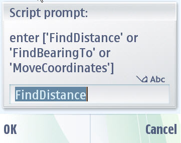

Location Service API - Example Widget Documentation
This document describes the Location Widget application for S60 5th Edition SDK. Target audience are developers developing location aware applications and looking for location services from the series 60 platform.
Widgets are lightweight Web applications developed using the same well-known standards-based Web technologies – AJAX, CSS, HTML and JavaScript – used to create Web pages. Developers can use it as a reference and testers can use it to test the relevant functionality. This widget is intended for S60 5th Edition SDK. Developers should be able to develop professional applications.
Example Widget Application is designed to run on S60 5th Edition SDK. It will be designed such that a developer takes it as a reference to create useful applications for any functionality supported on SDK. It will be designed to let the testers to test the functionality
Example widget is not intended to give full featured implementation. This example will implement the Messaging Service APIs. It gives only messaging functionalities. It only lists the Draft messages from the Draft folder.
The example widget uses the WRT 1.0 API. The Web Runtime (WRT) environment supports the following Internet technology standards:
HTML 4.01
The basic HTML standards are supported.
XHTML 1.0
The basic XHTML standards are supported.
CSS Level 2 revision 1 (CSS 2.1)
JavaScript 1.5 (ECMA-262 3rd Edition)
The standard JavaScript features are supported. The WRT environment also provides some additional features that are mobile device specific.
The following additional JavaScript features are supported in the WRT environment:
The LocationWidget demonstrates service APIs for Location-Based Services (LBS). These applications that leverage the user’s current physical location to provide an enhanced service or experience. The support for this technical capability in mobile devices represents an opportunity for application developers to create services widely used and highly valued. Location information can be used for a variety of purposes; some of them are as listed below:
The wide-open nature of the market means there is room for entrepreneurial innovation.
The Location service API provides the consumer with a user-friendly interface to access location services offered by series 60, while hiding the complexities involved in accessing the services. Keeping a simple location interface to access location services benefits the application development process.1. Use the file - Open option to open the widget under <Installed-5th-Edition-SDK>\S60WidgetExamples\LocationWidget.wgz.
2. Go to Application folder and click on the LocationWidget to start. Once you start the widget, it will ask your application permission to access data and then start the application.
3. GetLocation or GetLocationAsync:When you click of these buttons, it will give you location information of your device. Please refer the bellow image to get more idea about the location details.
4. You can also trace your current location by pressing Trace button. Informs the consumer of any change in current location. It will keep tracing the location in every second.
Note: Device should be Location aware(that is, it should have some location service provider in form of GPS, AGPS, Bluetooth)
5. To cancel the Location tracing call, you can use CancelNotification button, which will cancel the locaiton tracing event. It also cancel the event for Get Location.
6. Calculate button performs specific calculations on user provided data. There are three options for the location calculations.

Example Widget Application does not support internationalization